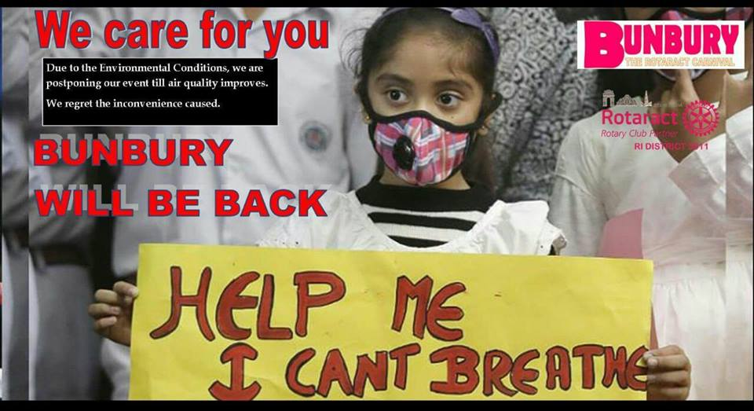

Dear Attendees,
As per the recent notice by the Honorable High Court and NGT towards the bad environmental conditions in Delhi-NCR, we regret to inform you that BUNBURY-The Rotaract Carnival has been forced to postponement.
DELHI is under High Alert due to heavy smog and thus truck entries and exits have been sealed.
We care for you and don't want you to hamper your health.
So, we will be back as soon as the environmental conditions are better for your health.
We regret for the inconvenience caused.
Hope you all will support us in this unavoidable situation.
New dates will be announced in a couple of days. Stay Tuned for updates on the changed dates.
With this alteration, team BUNBURY will make sure that the postponed event is much bigger and better.
Till then stay safe, and take care !
Regards
DRR Anmol Chawla
RID 3011